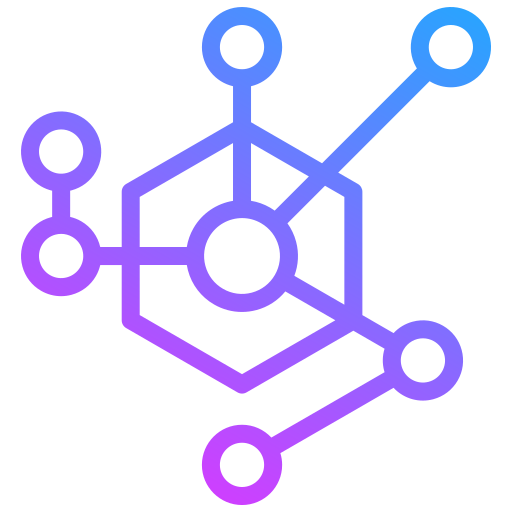

Network Design & Installation
- Wired (LAN) network setup: Ethernet cabling, switches, routers.
- Wireless (WLAN/Wi-Fi) network setup: Access points, extenders, mesh systems.
- Structured cabling solutions.
- Server room/data cabinet setup and organization.
- Office and home network planning.